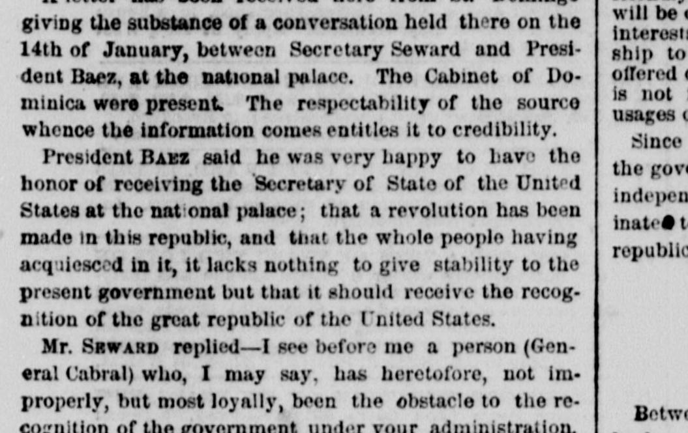
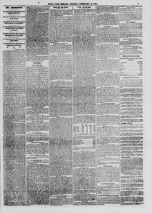

See the full pageVer la página completaPresident Rabz said he was very happy to have tho honorEl presidente Báez dijo que estaba muy contento de tener el honor
President Baez stated to the U.S. Secretary of State that a revolution had occurred in the republic and requested the recognition of the United States to give stability to the new government. The U.S. Secretary replied that the United States had previously instructed its consul to recognize the republic under General Cabral, noting that a subsequent change placed Baez at the head of the republic in antagonism to the previously expressed will of the people in favor of Cabral.El presidente Báez comunicó al secretario de Estado de los Estados Unidos que se había producido una revolución en la república y recabó el reconocimiento del gobierno estadounidense para consolidar la estabilidad del nuevo régimen. El secretario estadounidense contestó que su país ya había dado instrucciones al cónsul para reconocer a las autoridades bajo el mando del general Cabral, añadiendo que una alteración posterior encumbró a Báez a la presidencia en abierta contradicción con la voluntad popular antes expresada en favor de Cabral.
FULL TEXT:TRADUCCIÓN:
giving the substance of a conversation held there on the 14th of January, between Secretary Seward and President Baez, at the national palace. The Cabinet of Dominica were present. The respectability of the source whence the information comes entitles it to credibility.dando la sustancia de una conversación sostenida allí el 14 de enero, entre el secretario Seward y el presidente Báez, en el palacio nacional. El Gabinete de Dominica estaba presente. El respetable origen de donde procede la información le da derecho a credibilidad.
President BAEZ said he was very happy to have the honor of receiving the Secretary of State of the United States at the national palace; that a revolution has been made in this republic, and that the whole people having acquiesced in it, it lacks nothing to give stability to the present government but that it should receive the recognition of the great republic of the United States.El Presidente BÁEZ dijo que estaba muy feliz de tener el honor de recibir al Secretario de Estado de los Estados Unidos en el palacio nacional; que se ha hecho una revolución en esta república, y que, habiendo todo el pueblo consentido en ella, nada le falta para dar estabilidad al presente gobierno sino que reciba el reconocimiento de la gran república de los Estados Unidos.
Mr. SEWARD replied—I see before me a person (General Cabral) who, I may say, has heretofore, not improperly, but most loyally, been the obstacle to the recognition of the government under your administration.El Sr. SEWARD respondió—Veo ante mí a una persona (el general Cabral) que, puedo decir, ha sido hasta ahora, no indebidamente, sino muy lealmente, el obstáculo para el reconocimiento del gobierno bajo la administración de usted.
The New York Herald. New York, February 5, 1866. Page 5.